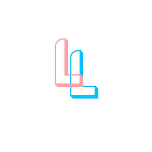

Trade Mark Journal No.2025/013 28 March 2025
UK00004171929 11 March 2025 (35,41,43)

- Class 35
- Promotion of sports competitions and events; Promotion of special events; Promotion services relating to esports events; Marketing services relating to esports events; Advertising services relating to esports events; Arranging promotion of charitable fundraising events; Conducting of commercial events; Organization of events, exhibitions, fairs and shows for commercial, promotional and advertising purposes; Promotion of goods and services through sponsorship of sports events; Arranging and conducting of promotional events; Organisation of exhibitions and events for commercial or advertising purposes; Event marketing.
- Class 41
- Timing of sports events; Sports events (Timing of -); Organising of sporting events; Organising sporting events; Dance events; Organising of sports events; Organization of sporting events; Organization of sporting events and competitions; Arranging of sporting events; Organisation of sporting events; Organisation of sporting events and competitions; Organising of sports competitions and events; Production of sporting events; Organisation of entertainment events; Organising of recreational events; Organising community sporting events; Organization of entertainment events; Ice-skating events (Organising of -); Provision of sporting events; Handicapping for sporting events; Arranging of cultural events; Organisation of cultural events; Conducting of sports events; Publication of calendars of events; Organising gymnastics events; Gymnastics events (Organising of -); Organization of dancing events; Organization of sporting events and competitions, involving animals; Organising of sporting events, competitions and sporting tournaments; Management of events for sporting clubs; Organising of football events; Conducting of cultural events; Organising dancing events; Organisation of esports events; Conducting of entertainment events; Organisation of sporting competitions and sports events; Organisation of musical events; Organising community cultural events; Organisation of cycling events; Organising events for cultural purposes; Handicapping services for sporting events; Production of esports events; Organizing community sporting and cultural events; Ticket information services for sporting events; Organisation of entertainment and cultural events; Organising events for entertainment purposes; Services for the organisation of sports events; Organisation of educational events; Entertainment provided during intervals of sporting events; Arranging of educational events; Organization of cosplay entertainment events; Entertainment services relating to sporting events; Time recording services for sporting events; Organising of sports competitions and sports events; Organising of sports events and of sports competitions; Organisation of automobile rallies, tours and racing events; Entertainment services in the nature of sporting events; Conducting of live sports events; Organizing cultural and arts events; Organising of sports and sports events; Presentation of live entertainment events; Booking of sports personalities for events (services of a promoter); Provision and management of sporting events; Organization of events for cultural purposes; Production of sporting events for radio; Production of sporting events for television; Musical events (Arranging of -); Arranging of musical events; Ticket information services for esports events; Conducting of educational events; Production of sporting events for film; Booking of seats for shows and sports events; Services for the organisation of football events; Conducting of live esports events; Organisation of events for cultural, entertainment and sporting purposes; Conducting of live entertainment events; Entertainment services in the nature of skating events; Provision of recreational events; Provision of information relating to sporting events; Organization of animal racing events; Ticket procurement services for sporting events; Production of live entertainment events; Providing facilities for sports events; Master of ceremony services for parties and special events; Rental of equipment for use at sporting events; Ticket information services for entertainment events; Organising of motor racing events; Entertainment services provided during intervals at sports events; Arranging and conducting of sports events; Sporting event organization; Organisation of automobile racing events; Advisory services relating to the organisation of sporting events; Production of esports events for television; Organisation of vehicle racing events; Arranging for ticket reservations for shows and other entertainment events; Disc jockeys for parties and special events; Booking of seats for entertainment events; Providing facilities for sporting events, sports and athletic competitions and awards programmes; Disc jockey services for parties and special events; Arranging and conducting of entertainment events; Ticket reservation for cultural events; Entertainment services in the nature of organizing social entertainment events; Horse jumping events (Organising of -); Providing information on congress events; Organising of sporting activities and competitions; Organising of sporting activities or competitions; Arranging and conducting of live entertainment events; Video editing services for events; Ticket procurement services for entertainment events; Preparing subtitles for live theatrical events; Providing will-call ticket services for entertainment, sporting and cultural events; Arranging and conducting of sports events for charitable purposes; Organisation of sports events in the field of football; Organising of sporting activities and of sporting competitions; Entertainment services in the nature of arranging social entertainment events; Rental of equipment for use at athletic events; Organisation of sporting activities and competitions; Booking of performing artists for events (services of a promoter); Special event planning; Special event planning consultation; Ticket reservation and booking services for sporting events; Ticket reservation and booking services for esports events; Wedding celebrations (Organisation of entertainment for -); Ticket reservation and booking services for entertainment events; Ticket reservation and booking services for cultural events; Rental of equipment for use at gymnastic events; Organisation of stock car racing events; Arranging of an annual conference relating to logistics; Arranging of an annual educational conference; Presentation of concerts; Arranging and conducting of entertainment events for charitable fundraising purposes; Ticketing and event booking services; Organising of meetings in the field of entertainment; Ticket reservation and booking services for education, entertainment and sports activities and events; Organising of business training; Organisation of conferences and symposia in the field of medical science; Organisation of entertainment for birthday parties; Holiday camp amusement centre services; Ticket reservation and booking services for recreational and leisure events; Organisation of galas; Theatre ticket booking services; Booking agency services for cinema tickets; Booking agency service for cinema tickets; Booking agency services for theatre tickets; Ticket reservation services (Theatre -); Ticket reservation services (Concert -); Theatre ticket agency services; Booking agencies for theatre tickets; Ticket reservation and booking services for theater shows; Ticket agency services [entertainment]; Entertainment ticket agency services; Reservation services for theatre tickets; Ticket reservation and booking services for music concerts; Booking agencies for concert tickets; Reservation services for concert tickets; Theatrical ticket agency services; Theatre and concert tickets reservation services; Reservation services for concert and theatre tickets; Booking of seats for shows and booking of theatre tickets; On-line ticket agency services for entertainment purposes; Reservation services for show tickets; Theatre booking services; Concert booking services; Ticket information services for shows; Entertainment booking services; Booking of entertainment; Booking agencies for entertainment; Booking of seats for concerts; Concert booking; Booking of entertainment halls; Theatrical booking agencies; Corporate hospitality (entertainment); Hospitality services (entertainment); Corporate entertainment services.
- Class 43
- Event facilities and temporary office and meeting facilities; Provision of event facilities and temporary office and meeting facilities; Provision of conference, exhibition and meeting facilities; Catering services specialising in cutting ham for fairs, tastings and public events; Hospitality services [accommodation]; Hospitality services [food and drink]; Catering services for hospitality suites; Corporate hospitality (provision of food and drink); Providing temporary accommodation as part of hospitality packages; Providing food and drink catering services for convention facilities; Providing food and drink catering services for exhibition facilities; Consultancy services in the field of food and drink catering; Hotel catering services; Providing food and drink for guests in restaurants; Catering services for providing European-style cuisine; Food and drink catering for banquets; Catering for the provision of food and beverages; Providing food and drink catering services for fair and exhibition facilities; Catering services for providing Spanish cuisine; Charitable services, namely providing food and drink catering; Catering services for the provision of food and drink; Food and drink catering for institutions; Resort lodging services; Providing food and drink for guests; Catering of food and drinks; Hotel accommodation services; Catering services for providing Japanese cuisine; Serving food and drink for guests in restaurants; Hotel restaurant services; Catering for the provision of food and drink; Providing hotel accommodation; Catering services for the provision of food; Food and drink catering; Catering of food and drink; Catering (Food and drink -); Providing temporary lodging for guests; Hotel accommodation reservation services; Business catering services; Serving food and drink for guests; Washoku restaurant services; Camp services (Holiday -) [lodging]; Holiday camp services [lodging]; Providing travel lodging information services and travel lodging booking agency services for travelers; Providing accommodation in hotels and motels; Provision of hotel accommodation; Services for providing food and drink; Restaurant services provided by hotels; Resort hotel services; Services for the preparation of food and drink; Food and drink preparation services; Providing hotel and motel services; Tourist camp services [accommodation]; Holiday accommodation services; Providing restaurant services; Restaurant services; Consulting services in the field of culinary arts; Travel agency services for reserving hotel accommodation; Catering services for nursing homes; Provision of food and drink in restaurants; Restaurant services for the provision of fast food; Providing food and beverages; Consultancy services relating to hotel facilities; Office catering services for the provision of coffee; Arranging of hotel accommodation; Arranging hotel accommodation; Club services for the provision of food and drink; Restaurant reservation services; Catering services for educational establishments; Booking agency services for hotel accommodation; Agency services for booking hotel accommodation; Booking services for holiday accommodation; Accommodation services; Providing guesthouse services; Reservation services for accommodation; Accommodation reservation services; Catering services; Services for providing food; Food preparation services; Wine tasting services (provision of beverages); Services for the provision of food and drink; Reservation of hotel accommodation; Self-service restaurant services; Hotel reservation services; Take-away food and drink services; Reservation and booking services for restaurants and meals; Holiday planning services [accommodation]; Catering services for hospitals; Providing room reservation and hotel reservation services; Provision of food and beverages; Banqueting services; Catering; Reservation of tourist accommodation; Reception services for temporary accommodation [management of arrivals and departures]; Catering services for company cafeterias; Tourist agency services for booking accommodation; Booking of hotel accommodation; Providing food and drink in bistros; Preparation of food and beverages; Services for reserving holiday accommodation.
LIKE IT LOVE IT LIMITED